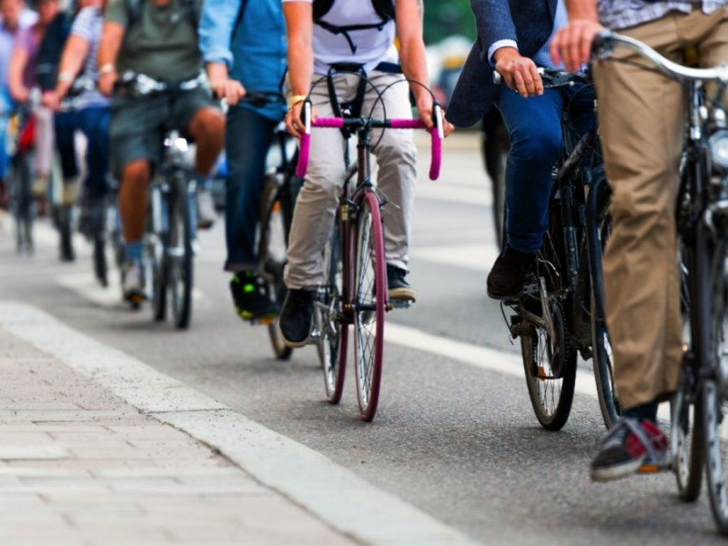

April 3, 2017
Pedal to the Pavement

There is a growing tide of bike commuters. The number of bicycle trips went from 1.7 billion in 2001 to 4 billion in 2009. With these increased numbers, streets are safer and businesses are more bike-friendly. Could your workplace join in?
The League of American Bicyclists suggests businesses set up a repair station with tools, organize a “bike train” to turn commuting into a social opportunity, install secure storage and make an office locker room for easier changing or showering. Another incentive employers can use is a “qualified bicycle commuting reimbursement” of up to $20 per month for related expenses.
Maybe your business could encourage bike traveling by patrons as well as employees? A local Yoga studio might allow bikers free use of a mat or maybe a discount at the corner coffee shop during Bike-to-Work week (May 15-19th)?
There is power in numbers and every bike commuter equals one less car on the road. So let’s all put the pedal to the pavement.